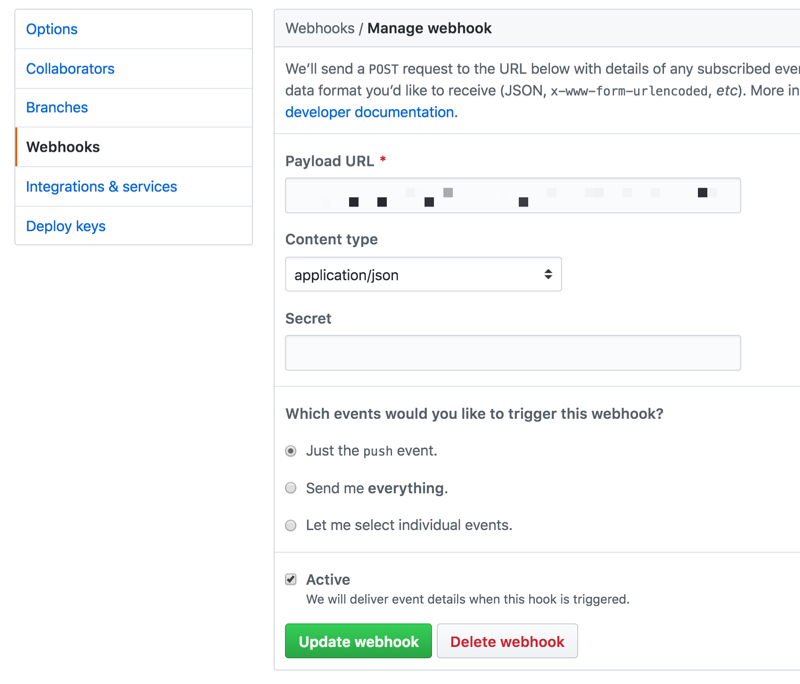

Provides an endpoint to your website to use as a webhook for git post commit hooks. When triggered the endpoint will queue a git pull to be executed by cron. This allows you to automate a deployment (plus whatever you want, e.g. Drupal cache clear), whenever you push to your repository. By leveraging cron, you can keep tight permissions and run your git pull as the cron user, not, say, apache. Intended to be used for staging websites, rather than production, where you would want to deploy manually.
Visit https://aklump.github.io/post_commit for full documentation.
cloudy pm-install aklump/post_commit./bin/post_commit init to finish installing.chmod -R ug+w logsPro Tip: Run
./bin/post_commit config-checkat any time to reveal configuration problems.
Determine the URL endpoint of the webhook, e.g.,
https://{website}/scheduler.php?key={url_private}
If you the site is HTTP Authorized, you will need to add credentials to the URL:
https://{user}:{password}@{website}/scheduler.php?key={url_private}
tail -f pending.txt.Open the endpoint in your browser, you should see something like:
origin user:
repo:
branch: *
PHP user: apache
127.0.0.1
Tue, 30 Oct 2018 11:25:09 -0700
jobs added: 1
--------------------------------------------------------------------------------
cd to the logs directory.Begin monitoring the orders.txt log using tail -f orders.txt. When you save your webhook below, you should see content appended--a new order--which indicates things are working correctly. It will resemble:
$ tail -f orders.txt
origin user: aklump
repo: aklump/post_commit
branch: *
--------------------------------------------------------------------------------
Compile the post commit hook url and add it to your github project.

Set up a cron job to execute ./bin/post_commit run.
* * * * * ./bin/post_commit run >> /path/to/logs/cron.txt
This should be the target of a frequent cron job being run by the same user that owns the website files and .git folder. This script processes any orders that were scheduled by scheduler.php. You can redirect the output to logs/cron.txt file during setup, and once all is working you should consider doing like the second example which does not capture the output.
Example 2, no log of cron jobs, better once all is working correctly. When all is well you should run ./bin/post_commit empty-logs to flush the cron log.
* * * * * ./bin/post_commit run > /dev/null
Rather than deleting log files, truncate them with ./bin/post_commit empty-logs. This will maintain the correct permissions.
| basename | description |
|---|---|
| orders.txt | A running list of incoming pings. |
| last.json | The payload from the last ping. |
| pending.txt | Authorized jobs that are waiting to be run. |
| complete.txt | All jobs that have been run. These have been moved from pending. |
| cron.txt | Output from the cron job that controls the runner. |
You must have Cloudy installed on your system to install this package.
Your repository may not use a passphrase, as this prevents the automatic git pull.
The installation script above will generate the following structure where . is your repository root.
.
├── bin
│ ├── post_commit -> ../opt/post_commit/post_commit.sh
│ └── config
│ ├── post_commit.yml
│ └── post_commit.local.yml
├── opt
│ ├── cloudy
│ └── aklump
│ └── post_commit
└── {public web root}
cloudy pm-update aklump/post_commit| Filename | Description | VCS |
|---|---|---|
| post_commit.yml | Configuration shared across all server environments: prod, staging, dev | yes |
| post_commit.local.yml | Configuration overrides for a single environment; not version controlled. | no |
| scheduler.php | This should be pinged by a post commit hook on the origin repo via https and including the secret key. | yes |
./bin/post_commit helpIf you find this project useful... please consider making a donation.
You can test a single repository by appending the following to the url, for the purposes of testing.
&repo=jquery.slim_time
You can trigger a single branch response by appending the following to the url, for the purposes of testing.
&branch=master
Check to make sure the the logs directory and all log files are owned by the cron user and the group is the php user and that both user and group has rw permissions.
Does the git repo require a passphrase for pulling? You will have to disable that.
Try logging in to the server as the cron user and running the command.
Make sure you can git pull manually using your ssh keys, etc.